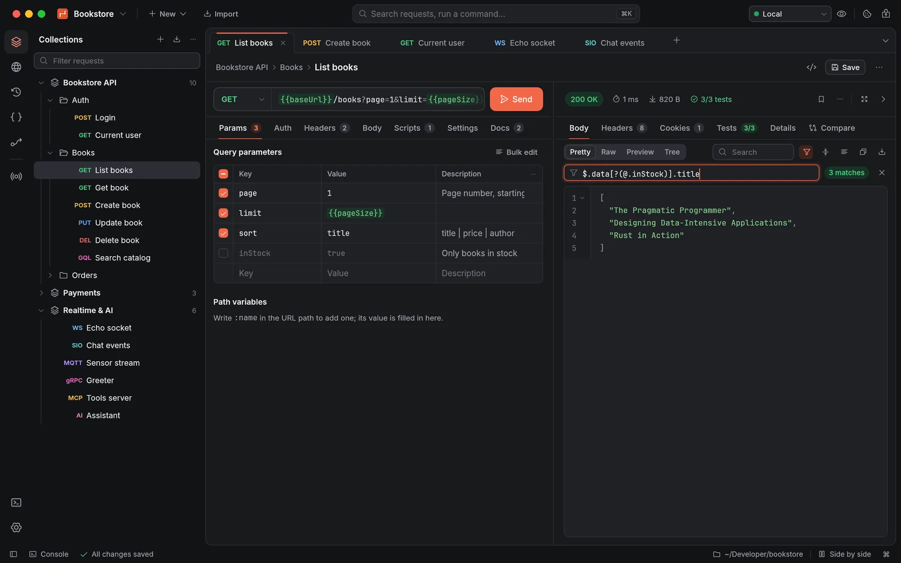
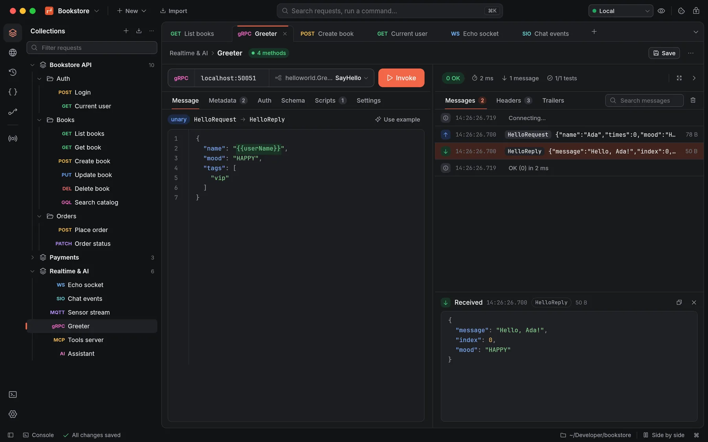
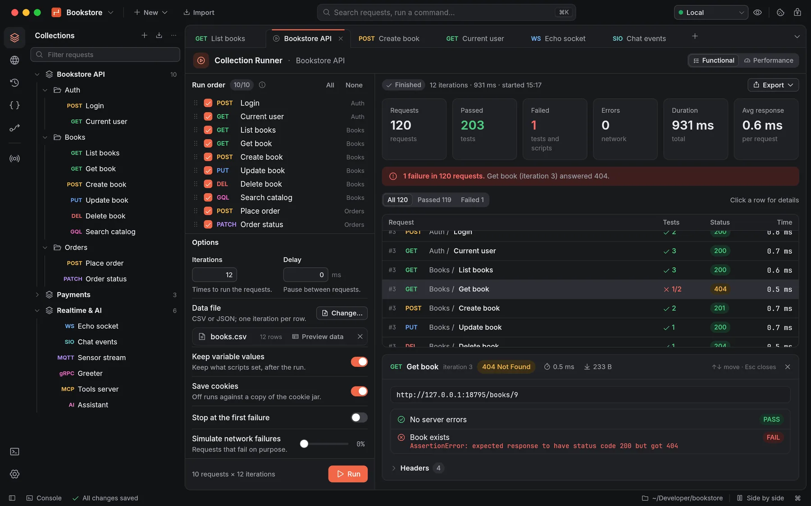
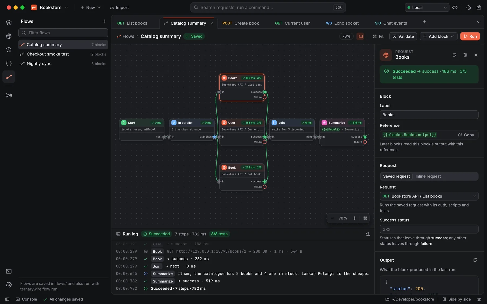

Every API.
One native window.
HTTP, GraphQL, gRPC, WebSocket, MQTT, MCP and AI requests in one small app, written in Rust. It opens in 40 ms, runs your Postman collections and scripts as they are, and keeps your work as plain files in Git.
Light enough to leave open all day.
No Electron, no Node.js, no account. TernaryWire is one small binary that opens before you’ve looked away, and draws nothing at all when nothing changes.
Measured with scripts/bench.sh on an Apple Silicon MacBook with the release build.
Request on the left. Answer on the right.
Every tab is two panes side by side: what you send, and what came back, with the status, time, size and test results in one line. Narrow the window and the response moves below.
- {{variables}} light up as you type; hover one for its value and the scope it comes from.
- Pretty, Raw, Preview and Tree views, with folding, search and the timings: TTFB and total.
- 1. Variables resolve from the active environment.
- 2. Status, time, size and tests in one line.
- 3. Fold any object; big responses are shown virtually.
- 4. Each request is a JSON file in the workspace folder.
Answers you can work with.
Filter a response with JSONPath, compare it with the one before, or right-click any value to turn it into a variable or a test. Fewer round trips to the docs and the clipboard.

One tab per protocol, one way to work.
Each protocol gets the same layout, its own message log and its own scripts, and all of them run in the Collection Runner. Logs are virtualized, so tens of thousands of messages stay smooth.

Bring your collections. They just run.
Postman collections v2.0 and v2.1, environments and globals import as they are, and pm.* scripts run on an embedded engine with the real Chai, lodash, moment, crypto-js and tv4. A corpus of 50 real-world Postman scripts passes 50 of 50.
- Export back to Postman v2.1: a round trip gives the same file.
- Scripts run in a separate process with time and memory limits, so a runaway loop can’t freeze the app.
1pm.test("Status code is 200", () => { 2 pm.response.to.have.status(200); 3}); 4 5const books = pm.response.json().data; 6pm.test("Every book has a title", () => { 7 pm.expect(books.every(b => b.title)).to.be.true; 8}); 9 10// the next request reads {{firstId}} 11pm.collectionVariables.set("firstId", books[0].id);
The same run, in the app and in CI.
The Collection Runner runs a collection or folder with a data file, iterations and delays, and exports JUnit, HTML or JSON. In a terminal, ternarywire run takes newman’s options, so it can replace newman run in your pipeline.
- Performance tests with virtual users and ramp-up: p50 to p99, throughput and errors.
- Exits with 1 when a test fails, so it gates CI. Credentials are masked in every report.

112 iterations, one per row of books.csv: 120 requests in 923 ms. 2The one failure, with the assertion that failed and the response it got. 3Simulate network failures to see how your scripts cope.$ ternarywire run api -e Staging --folder Books -r cli,junit Bookstore API ❏ Books ↳ List books GET https://staging.example.com/books?page=1&limit=5 [200 OK, 820 B, 48 ms] ✓ No server errors ✓ Status code is 200 ✓ Every book has a title ↳ Create book POST https://staging.example.com/books [201 Created, 379 B, 61 ms] ✓ Status code is 201 ↳ Get book GET https://staging.example.com/books/99 [404 Not Found, 96 B, 39 ms] 1. Book exists ┌───────────────────────────┬──────────┬──────────┐ │ │ executed │ failed │ ├───────────────────────────┼──────────┼──────────┤ │ requests │ 3 │ 0 │ │ test-scripts / assertions │ 5 │ 1 │ └───────────────────────────┴──────────┴──────────┘ # failure detail 1. AssertionError Book exists: expected response to have status code 200 but got 404 $ echo $? 1
- uses: actions/checkout@v4 - uses: ilhamnadhif/ternarywire@v0.3.1 with: collection: api/ environment: Staging reporters: cli,junit args: --bail
Chain requests on a canvas.
Requests, conditions, loops, scripts and AI calls, joined by wires. Parallel branches really run at the same time, each block shows its status and timing while the flow runs, and problems are flagged before you press Run.
- Saved as flows/*.flow.json in the workspace, and run in CI with ternarywire flow run.

1Three requests in parallel; the Join waits for every branch that can reach it. 2An AI block summarises what the requests returned. 3The run log: 7 steps and 8 of 8 tests in 776 ms.Everything around the request, on your machine.
Mock server
Served from a collection’s examples, with latency, bandwidth and failure simulation. One click points {{baseUrl}} at it.
Webhook listener
A local endpoint that records every request, answers with the response you set, and replays events to another URL.
Capture proxy
Record what other apps send, decrypt HTTPS per host with a local CA whose key stays in the Keychain, and save requests to a collection.
Spec Hub
OpenAPI, AsyncAPI, Protobuf, GraphQL and Smithy with live validation and docs beside the editor, and sync between spec and collection.
Twelve auth types
Checked against the official test vectors where they exist, inherited from collection and folder, with OAuth tokens kept in the Keychain.
A vault for secrets
Read values from the Keychain, HashiCorp Vault, AWS Secrets Manager, Azure Key Vault or 1Password, never from a file you commit.
Code in 18 flavours
Copy any request as code, or as the exact cURL that was sent, with every variable resolved.
Keyboard first
Quick search ⌘K finds any request; the command palette lists every command with its shortcut.
Two languages, two themes
Every button, tab and field has a name for screen readers, and the whole app works from the keyboard.
Your workspace is a folder in Git.
One pretty-printed file per request, in a stable order, so a change to a header is a one-line diff your team can review. Share a workspace the way you share code: commit it.
- Secrets never reach the files: they go to the Keychain. Current values, cookies and history stay in a local folder Git ignores.
- Fork a collection, then pull from it or merge back with a three-way diff.
~/code/bookstore/ ternarywire.json manifest environments/ staging.json secrets left blank collections/bookstore-api/ collection.json auth, scripts, variables books/ list-books.request.json create-book.request.json flows/catalog-summary.flow.json specs/bookstore.yaml .ternarywire/ local only, ignored by Git
4 "request": { 5 "protocol": "http", 6 "method": "POST", 7 "url": "{{baseUrl}}/books", 8 "headers": [ 9 { 10 "key": "Content-Type", 11 "value": "application/json" 12- } 12+ }, 13+ { 14+ "key": "Idempotency-Key", 15+ "value": "{{$guid}}" 16+ } 17 ], 18 "body": { 19 "mode": "raw",
Your hands stay on the keys.
The command palette, ⇧⌘P, lists all of them.
Your APIs, your machine.
No account
Download it and send a request. There is no sign-in, no plan, no trial and no cloud sync. Your workspaces are folders you own.
No telemetry
TernaryWire connects to the servers you send requests to and, once at start, to GitHub to check for updates, which you can turn off. Nothing else.
Open source
MIT or Apache-2.0, built in the open with egui, reqwest, tonic and boa. Read it, build it, change it.
A minute from here.
TernaryWire checks for updates after that, and one click installs the new version. Then Import a Postman collection, an OpenAPI file or a cURL command, or start a new request.
Run this in Terminal recommended
It checks the download’s SHA-256, bundle id and signature, then installs into /Applications. Run it again to update. macOS 12 or later, Apple Silicon and Intel.
curl -fsSL https://raw.githubusercontent.com/ilhamnadhif/ternarywire/master/scripts/install.sh | bashOr download the disk image
Download the installer
Windows 10 or 11, x64. It installs for your user without administrator rights, can add the ternarywire CLI to PATH, and installs over an older version when you update.
Install it
sudo apt install ./ternarywire_0.3.1_amd64.debOr sudo dnf install ./ternarywire-0.3.1-1.x86_64.rpm. The packages put ternarywire-app and the ternarywire CLI in /usr/bin. glibc 2.28 or later; the AppImage needs FUSE.
With Cargo any system, Rust 1.88+
cargo install --locked --git https://github.com/ilhamnadhif/ternarywire ternarywire-cliOr take the binary
A single binary of about 21 MB. The macOS archive holds only the CLI; the Windows and Linux downloads include it next to the app.
Or in Docker
docker run --rm -v "$PWD:/work" ternarywire run collection.json -e env.jsonBuild the image once with docker build -f docker/Dockerfile -t ternarywire . in a clone of the repository.
Is it really free?
Yes. TernaryWire is open source under MIT or Apache-2.0, with no account, no paid tier and no telemetry.
Will my Postman collections work?
Collections v2.0 and v2.1, environments and globals import as they are, and export back to v2.1. Scripts run on an embedded JavaScript engine with pm.test, pm.expect, pm.sendRequest, the variable scopes and the real Chai, lodash, moment, crypto-js and tv4; a corpus of 50 realistic scripts passes 50 of 50.
Hosted team features such as cloud sync, monitors and public workspaces are out of scope: workspaces are folders you share with Git.
Can I run it in CI?
Yes. ternarywire run takes a Postman collection file, a workspace or a collection folder with newman’s options (-e, -d, -n, --folder, -r cli,junit…) and exits with 1 when a test fails. The repository is also a GitHub Action, and there’s a Dockerfile.
Where do my secrets go?
Secret variables, passwords, tokens, client secrets and OAuth tokens go to the macOS Keychain (or your keyring on Linux), never to workspace files, exports, history or run reports. On machines without a keychain, such as CI, they go to .ternarywire/secrets.json, which the workspace’s .gitignore keeps out of Git.
How does my team share a workspace?
Put it in a Git repository. Each request is its own pretty-printed file in a stable order, so changes review and merge like code. Initial values are shared; current values stay on each machine.
Why does my system warn me about it?
The builds aren’t notarized by Apple or code-signed for Windows yet. On macOS, the one-line installer checks the download itself; with the .dmg, use Open Anyway in Privacy & Security. On Windows, SmartScreen asks once.
Does it work on Windows and Linux?
Yes: a Windows installer, and .deb, .rpm, AppImage and .tar.gz for Linux on x86_64 and ARM64. macOS is where it’s built and tested by hand; every release installs the Linux packages on six distributions and the Windows installer on Windows before it’s published. Reports are welcome.
Send your first request
a minute from now.
Free and open source · v0.3.1